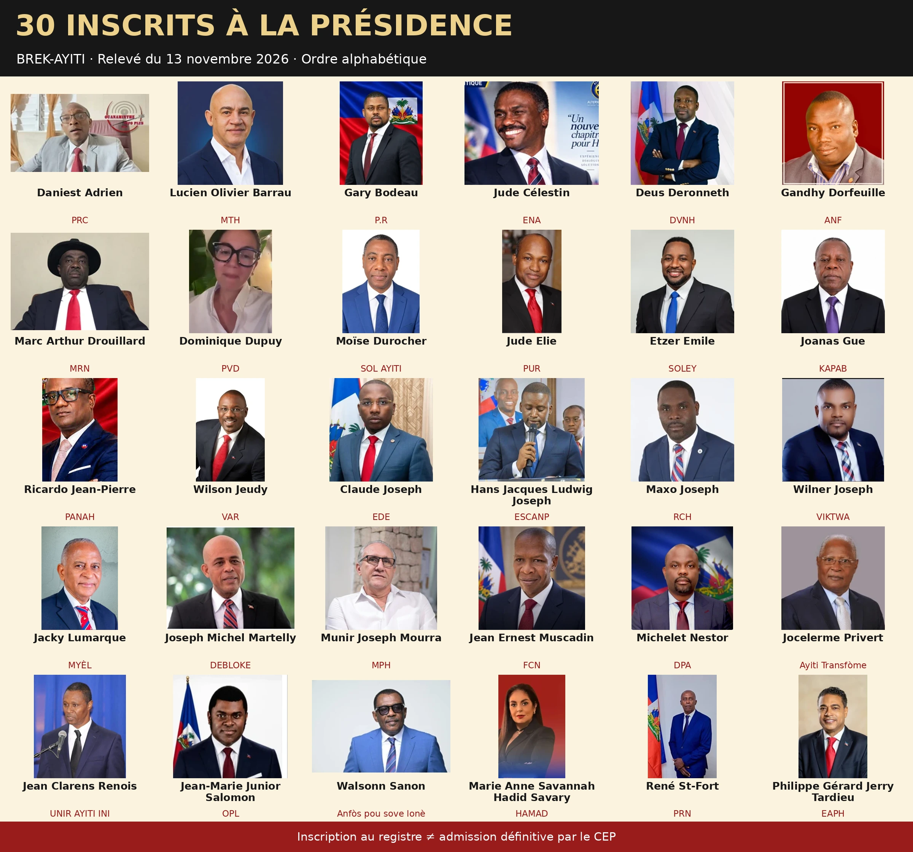

KB
Kely C. Bastien
DELIVRANS · Photo à vérifier
 BREK-AYITIActualités
BREK-AYITIActualitésPOSITION DE BREK-AYITI · 12 NOVEMBRE 2026
Par la rédaction de BREK-AYITI · Publié le 12 novembre 2026 · Mis à jour le 15 novembre 2026
La dispersion des candidatures et le financement des élections appellent des réponses. BREK-AYITI propose un cap et une méthode : savoir examiner chaque candidature.
INTENTIONS DE VOTE
Un espace citoyen pour exprimer ses préférences et suivre leur évolution.
Illustration conceptuelle — aucun pourcentage ni classement fictif.
Galerie documentaire : montage des 30 premiers inscrits et deux fiches complémentaires en attente de portraits authentifiés.

Trente-deux inscriptions à la présidence sont recensées au 15 novembre 2026 ; le relevé du 13 novembre en comptait trente. Quarante-six structures politiques ont des candidats enregistrés, et 10 492 candidatures ont été déposées tous postes confondus. Ce relevé n’est pas la liste des candidatures définitivement admises. La liste peut encore évoluer.
Trente personnes pour un seul fauteuil. Trente programmes, ou trente ambitions ? Comment un peuple épuisé, déplacé, menacé, peut-il comparer sérieusement trente offres politiques ? Pour BREK-AYITI, cette dispersion pose la question d’un système où l’on se présente parfois davantage pour exister que pour gouverner.
ACTUALISATION · 15 NOVEMBRE 2026
Le tableau statistique du Conseil électoral provisoire (CEP), actualisé le 15 novembre 2026 à 14 h 25, recense 32 inscriptions en ligne à la présidence, contre 30 dans le relevé utilisé pour la première version de cet article. Ce nombre est provisoire : une inscription ne constitue pas une candidature agréée.
Deux personnes supplémentaires figurent dans le relevé nominatif : Kely C. Bastien (DELIVRANS) et Lucmanne Delille (Debout Citoyen). Leurs photographies ne sont pas encore publiées ici faute de portrait individuel dont l'identité et la provenance ont été vérifiées. Nous ne substituons pas de photographie non authentifiée.
DELIVRANS · Photo à vérifier
Debout Citoyen · Photo à vérifier
Liste intégrale actualisée : les 30 personnes figurant dans le tableau ci-dessous, auxquelles s'ajoutent Kely C. Bastien et Lucmanne Delille. Le photomontage de 30 portraits est conservé comme document daté du 13 novembre ; il ne représente pas l'intégralité des 32 inscrits au 15 novembre.
Sources : CEP — tableau statistique officiel ; Espas — relevé nominatif du registre. Dernière consultation : 15 novembre 2026. La liste officielle des candidats admis sera publiée après vérification des dossiers.
| Candidat | Structure politique | Fiche |
|---|---|---|
| Daniest Adrien | PRC | Voir la fiche |
| Lucien Olivier Barrau | MTH | Voir la fiche |
| Gary Bodeau | P.R | Voir la fiche |
| Jude Célestin | ENA | Voir la fiche |
| Deus Deronneth | DVNH | Voir la fiche |
| Gandhy Dorfeuille | ANF | Voir la fiche |
| Marc Arthur Drouillard | MRN | Voir la fiche |
| Dominique Dupuy | PVD | Voir la fiche |
| Moïse Durocher | SOL AYITI | Voir la fiche |
| Jude Élie | PUR | Voir la fiche |
| Etzer S. Émile | SOLEY | Voir la fiche |
| Joanas Gué | KAPAB | Voir la fiche |
| Ricardo Jean-Pierre | PANAH | Voir la fiche |
| Wilson Jeudy | VAR | Voir la fiche |
| Claude Joseph | EDE | Voir la fiche |
| Hans Jacques Ludwig Joseph | ESCANP | Voir la fiche |
| Maxo Joseph | RCH | Voir la fiche |
| Wilner Joseph | VIKTWA | Voir la fiche |
| Jacky Lumarque | MYÈL | Voir la fiche |
| Michel Martelly | DEBLOKE | Voir la fiche |
| Munir Joseph Mourra | MPH | Voir la fiche |
| Jean Ernest Muscadin | FCN | Voir la fiche |
| Michelet Nestor | DPA | Voir la fiche |
| Jocelerme Privert | Ayiti Transfòme | Voir la fiche |
| Jean Clarens Renois | UNIR AYITI INI | Voir la fiche |
| Jean-Marie Junior Salomon | OPL | Voir la fiche |
| Walsonn Sanon | Anfòs pou sove lonè | Voir la fiche |
| Marie Anne Savannah Hadid Savary | HAMAD | Voir la fiche |
| René St Fort | PRN | Voir la fiche |
| Philippe Gérard Jerry Tardieu | EAPH | Voir la fiche |
Source : Espas, lecture du registre du CEP le 13 novembre 2026 à 22 h 31 (heure de Port-au-Prince). Les inscriptions ne valent pas admission définitive. Liste susceptible d’évoluer jusqu’au 15 novembre à minuit.
Le premier tour n’est plus prévu le 13 décembre 2026. Le calendrier actualisé publié par le CEP le 28 octobre fixe au 18 juillet 2027 le premier tour de la présidentielle et des législatives, avec la ratification populaire des changements constitutionnels. Le second tour est prévu le 4 octobre 2027.
Le suivi Espas indique une clôture de l’inscription en ligne à la présidence et aux législatives le 15 novembre 2026, une liste provisoire le 15 décembre et une liste définitive le 11 janvier 2027. Une inscription en ligne ne dispense pas de déposer les pièces exigées ni de passer l’examen de recevabilité. Les délais et modalités de dépôt doivent être contrôlés sur les communiqués du CEP.
Un accord annoncé le 3 juillet 2026 entre la Primature et le CEP a fixé à 120 millions de dollars le coût prévisionnel du processus, avec possibilité d’ajustement. Ce montant avait été établi avant la dernière révision du calendrier.
Selon la note du ministère de l’Économie et des Finances du 4 novembre, rapportée par Équilibre Presse, les versements au fonds commun géré par le PNUD atteignaient 80 651 000 dollars au 30 septembre 2026. Le solde annoncé était de 39 349 000 dollars, inscrit au budget 2026-2027 pour des décaissements progressifs. Ces versements ne doivent pas être confondus avec les dépenses effectivement exécutées pour le scrutin à venir.
Le report peut entraîner des besoins supplémentaires en personnel, en fonctionnement, en logistique ou en sécurité. Leur montant doit être documenté : sept mois supplémentaires ne permettent pas, à eux seuls, de calculer une hausse.
BREK-AYITI pose donc trois questions. Combien a déjà été dépensé, et pour quoi ? Quel sera le budget après le report ? Et qui contrôlera l’usage de chaque dollar ? Le peuple a le droit de suivre son argent, ligne par ligne.
BREK-AYITI espère qu’Haïti puisse construire une vie politique structurée autour de deux grands rassemblements : un camp libéral et un camp national. Il s’agit d’une proposition politique, fondée sur des regroupements volontaires et le respect du pluralisme.
Deux grands rassemblements pourraient porter des programmes construits, débattus et défendus par des équipes. Des primaires internes permettraient de départager les ambitions avant le scrutin national. Le citoyen disposerait ainsi de choix plus lisibles.
Nous ne prétendons pas qu’un nombre réduit de candidatures suffirait à réduire le coût des élections. L’inscription des électeurs, les bureaux de vote, la sécurité, le matériel et le personnel restent nécessaires. Les économies éventuelles doivent être démontrées. Notre argument principal est celui de la clarté, de la responsabilité et de la cohérence des projets.
Ce cap ne se décrète pas. Il se construit par des alliances sincères, des règles claires et le courage de faire passer Haïti avant les ego.
BREK-AYITI attend du Conseil électoral provisoire qu’il examine chaque dossier selon des critères légaux précis, connus de tous et appliqués à tous de la même façon. Pas de favoritisme, pas de pression, pas de décision opaque. Chaque acceptation et chaque rejet doivent être motivés et publics.
Une liste claire, fondée sur le droit, aidera le peuple à mieux choisir.
Le peuple ne peut pas tout attendre du CEP. Pour juger, il faut des critères. BREK-AYITI propose une série d’émissions pour aider chaque citoyen à examiner les candidatures, une par une, avec la même grille pour tous. Le nom, la plateforme et la date de lancement seront annoncés séparément.
Ces émissions appliqueront la même grille à tous, sur la base de faits vérifiables. Notre rôle est de donner au peuple les moyens de choisir en conscience.
Citoyens, citoyennes : ne votez pas pour un nom, une couleur ou une promesse de rue. Votez pour un projet, une équipe et une conduite. Scannez-les tous.
Haïti d’abord ! Haïti toujours !
— La rédaction de BREK-AYITI, Brigade Révolution Classique
21 photographies proviennent des ressources déjà utilisées par le baromètre BREK-AYITI. Les cinq autres proviennent de l’article BREK-AYITI sur Dominique Dupuy, d’Alternance Média, de Moredayiti et des articles du National et de Gazette Haïti. Les auteurs et licences d’origine ne sont pas tous renseignés ; ces liens indiquent la provenance, sans revendiquer la propriété des photographies.
Portraits ajoutés : Hans Jacques Ludwig Joseph — Hans Joseph (FB), repris par Gazette Haïti ; Jacky Lumarque — Caribbean Policy Consortium ; Michelet Nestor — Kayimit News ; Jean Clarens Renois — Vant Bèf Info, repris par NAGO. Recadrage et mise en page : BREK-AYITI.